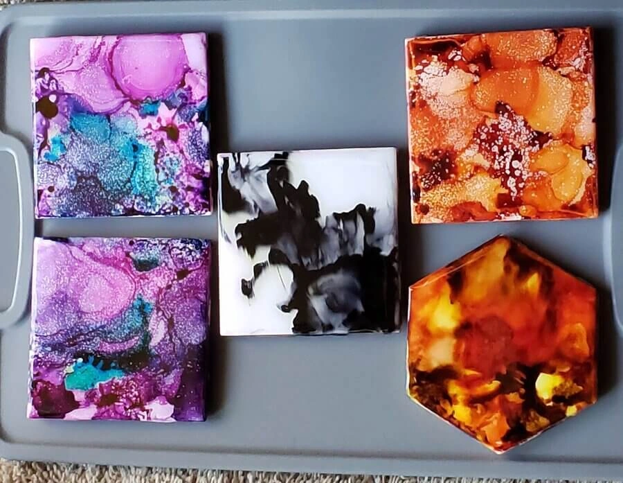

My One of a Kind Creations
Resin and Alcohol Ink
Learning to make coasters, March 9, 2021

These were three of my very first attempts at working with Resin (epoxy mix) and Alcohol Ink. Not what I was hoping for but just made me want to try again.
Another try this time trying my hand at Ceramic Coasters
Ceramic Coasters, Sep 2, 2021
Another attempt this time trying using resin and alcohol ink on ceramic tiles not the prettiest but another attempt none the less.
About Me

I am very creative person and I enjoy trying to make something new and inproving on the old. Some of it turns out like how I pictured in my mind, but, most are very interesting surprises. I put my all into everything I make.
Popular Post
Image
Image
Image
Follow Me
To keep up with anything new that I create and show.